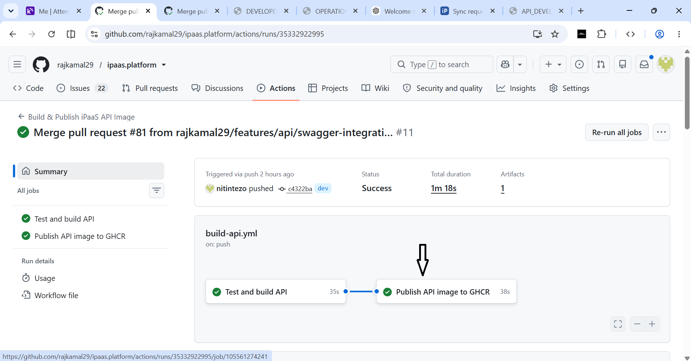
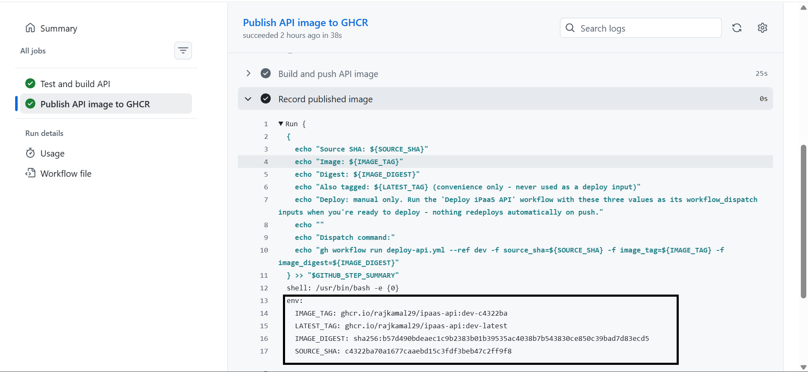

ipaas.api is the TypeScript and Express API for tenant and sync configuration. It persists data in the PostgreSQL instance owned by ipaas.infra; the API does not own or duplicate database migrations.
The API listens on port 3000. Its operational probes are /health and /ready, and its generated OpenAPI documentation is available through Swagger UI at /swagger.
The repository uses two distinct delivery stages:
deploy-api.yml.PLATFORM_RUNTIME_DATABASE_URLrajkamal29/ipaas.platform.package.json supports ^22.22.3, ^24.15.0, or ^26.0.0. CI uses Node 24; the Docker image uses Node 24.18.0. Use a supported release, preferably Node 24 to match CI and the image.package.json; it is bundled with supported Node installations.ipaas.infra/docker-compose.yml, ipaas.api/docker-compose.yml, and the deployment process.gh) — required only when manually dispatching CD from a terminal.deploy-api.yml, and pull the private GHCR image where applicable.ipaas.infra container and migrations must be running before the API can become ready.self-hosted, Windows, and ipaasrunner. The runner account must be able to use Docker Desktop and read its configured local environment variable.Only one teammate's ipaasrunner-labelled runner should be online when a manual deployment is dispatched. The workflow relies on this team convention for predictable targeting.
Run from: The parent directory where ipaas.platform should be created
Shell: PowerShell
Prerequisite: Git is installed and the developer has repository access.
git clone <REPOSITORY_URL> ipaas.platform
cd ipaas.platform
If the repository is already available, open its root and make sure the intended branch is checked out.
Run from: ipaas.platform repository root
Shell: PowerShell
Prerequisite: The repository is cloned and the intended branch is checked out.
cd ipaas.api
For a reproducible install from the committed lockfile:
Run from: ipaas.api
Shell: PowerShell
Prerequisite: Node.js 24 and npm 10.9.0 or newer are installed.
npm ci
Use npm install only when intentionally changing dependencies or updating package-lock.json; run it from ipaas.api in PowerShell after installing a supported Node.js/npm version. CI and the Dockerfile use npm ci.
The API reads PORT, DATABASE_URL, and NODE_ENV. DATABASE_URL is required; PORT defaults to 3000, and NODE_ENV defaults to development.
Never commit
.env, database passwords, encryption keys, tokens, or real connection strings. Never paste real secrets into documentation, issues, pull requests, or CI logs. Use placeholders in commands and examples.
Developer machine
↓
npm ci (locked dependency install)
↓
configure API environment
↓
PostgreSQL running with migrations
↓
Node API or Docker API
↓
http://localhost:3000
Follow the existing PostgreSQL runbook rather than maintaining a second copy here:
At minimum, from ipaas.infra:
Run from: ipaas.infra
Shell: PowerShell
Prerequisite: Node.js/npm and Docker Desktop in Linux containers mode are available. Replace the placeholders in the copied .env before starting PostgreSQL.
Copy-Item .env.example .env
# Edit .env and replace every placeholder consistently.
npm ci
docker compose up -d
docker compose ps
npm run migrate:up
Confirm the ipaas-postgres container is healthy and the ipaas-network network exists before starting the API.
Run from: ipaas.api
Shell: PowerShell
Prerequisite: The API dependencies are installed and .env.example exists.
Copy-Item .env.example .env
Choose the database hostname based on where the API process runs.
API running directly on Windows with npm run dev:
Edit file: ipaas.api/.env
Format: dotenv
Prerequisite: PostgreSQL is running and reachable through host port 5432.
PORT=3000
DATABASE_URL=postgresql://ipaas:<PASSWORD>@localhost:5432/ipaas_platform
NODE_ENV=development
API running inside Docker on ipaas-network:
Edit file: ipaas.api/.env
Format: dotenv
Prerequisite: PostgreSQL is running on the external Docker network ipaas-network.
PORT=3000
DATABASE_URL=postgresql://ipaas:<PASSWORD>@postgres:5432/ipaas_platform
NODE_ENV=production
Inside the API container, postgres:5432 means the PostgreSQL Compose service on ipaas-network. localhost:5432 means the API container itself and is therefore not the correct Docker-to-Docker address.
For every sample connection string in this document:
<PASSWORD> with the PostgreSQL password configured by that developer in ipaas.infra/.env.postgres is the Docker PostgreSQL service hostname.5432 is the PostgreSQL port.ipaas_platform is the database name.Run from: ipaas.api
Shell: PowerShell
Prerequisite: Dependencies and ipaas.api/.env are configured, and PostgreSQL is running.
npm run dev
For a compiled local run:
Run from: ipaas.api
Shell: PowerShell
Prerequisite: Dependencies and ipaas.api/.env are configured, PostgreSQL is running, and port 3000 is free.
npm run build
npm start
Docker Desktop must be running in Linux containers mode, and PostgreSQL must already have created ipaas-network.
Run from: ipaas.api
Shell: PowerShell
Prerequisite: ipaas.api/.env is configured for Docker-to-Docker connectivity, PostgreSQL is running on ipaas-network, and port 3000 is free.
docker compose up -d --build
docker compose ps
The local Compose file builds ipaas.api/Dockerfile, starts the ipaas-api container, publishes host port 3000, and attaches the container to the external ipaas-network.
Do not run the Node process and Docker API simultaneously on port 3000.
Run from: Any directory on the developer machine
Shell: PowerShell
Prerequisite: The API is running and host port 3000 is reachable.
Invoke-RestMethod http://localhost:3000/health
Invoke-RestMethod http://localhost:3000/ready
Expected responses:
{ "status": "ok" }
{ "status": "ready" }
/health confirms the HTTP process is responding. /ready executes a PostgreSQL SELECT 1, so it also confirms database connectivity.
Open Swagger UI:
Open from: A browser on the developer machine
Prerequisite: The API is running and host port 3000 is reachable.
http://localhost:3000/swagger
The generated OpenAPI JSON is available at:
Open from: A browser on the developer machine
Prerequisite: The API is running and host port 3000 is reachable.
http://localhost:3000/api-docs/swagger.json
The current CD process is intentionally manual. A push to dev can publish an image, but it never deploys that image automatically.
docker and docker compose available to the self-hosted runner account.rajkamal29/ipaas.platform and its GitHub Actions workflows.ipaas-network available.self-hosted, Windows, and ipaasrunner.PLATFORM_RUNTIME_DATABASE_URL configured for the account that actually runs the runner.Start PostgreSQL and apply migrations using Local Postgres Operations. Confirm:
Run from: ipaas.platform repository root
Shell: PowerShell
Prerequisite: Docker Desktop is running in Linux containers mode and the PostgreSQL infrastructure has been started.
docker ps --filter "name=ipaas-postgres"
docker network inspect ipaas-network
The deployment requires a Docker-reachable URL, for example:
postgres://ipaas:<PASSWORD>@postgres:5432/ipaas_platform
Do not use localhost for the database hostname inside the deployed API container.
The <PASSWORD> placeholder must be replaced locally with the password configured for PostgreSQL. postgres is the Docker service hostname, 5432 is its port, and ipaas_platform is the database name. Never commit or document the resulting real connection string.
The current local-demo deployment flow is:
Windows runner environment
↓
PLATFORM_RUNTIME_DATABASE_URL
↓
ipaas.api/deploy/local-demo.ps1
↓
process-only DATABASE_URL
↓
ipaas-api container
↓
PostgreSQL on ipaas-network
Configure it with a placeholder replaced locally:
Run from: Any directory, in a terminal opened as the same Windows user account that runs the self-hosted runner
Shell: PowerShell
Prerequisite: PostgreSQL is running on ipaas-network, and <PASSWORD> has been replaced locally with that developer's PostgreSQL password.
[Environment]::SetEnvironmentVariable(
"PLATFORM_RUNTIME_DATABASE_URL",
"postgres://ipaas:<PASSWORD>@postgres:5432/ipaas_platform",
"User"
)
PLATFORM_RUNTIME_DATABASE_URL is local runner configuration. It is not stored in Git and is not hardcoded in either workflow. local-demo.ps1 looks in User, Process, then Machine scope and supplies the selected value to the API container as DATABASE_URL.
The configured scope must belong to the account running the runner. A User-scoped variable for one interactive user is not available as that User value to a runner service executing under another identity. Relaunch or restart the runner/process after changing environment configuration.
Workflow: .github/workflows/build-api.yml
Workflow name: Build & Publish iPaaS API Image
For pull requests targeting dev, CI:
For pushes to dev, CI performs the same validation and then:
dev-<short-sha> tag.dev-latest as a convenience tag.Never use
dev-latestas a deployment input. Manual deployment must use the immutable image tag and exact digest from one successful CI publication.
rajkamal29/ipaas.platform on GitHub.dev.ghcr.io/.../ipaas-api:dev-<short-sha> tag.sha256:... content digest returned by the registry.

The three values must come from the same successful CI publication.
Authenticate and verify GitHub CLI access:
Run from: ipaas.platform repository root
Shell: PowerShell
Prerequisite: GitHub CLI is installed and the developer has permission to view and dispatch repository Actions workflows.
gh auth status
PowerShell command:
Run from: ipaas.platform repository root
Shell: PowerShell
Prerequisite: gh auth status succeeds, and all three input values were copied from the same successful API CI run.
gh workflow run deploy-api.yml `
--repo rajkamal29/ipaas.platform `
--ref dev `
-f source_sha=<SOURCE_SHA> `
-f image_tag=<IMAGE_TAG> `
-f image_digest=<IMAGE_DIGEST>
Bash-compatible one-line command:
Run from: ipaas.platform repository root
Shell: Git Bash
Prerequisite: GitHub CLI authentication succeeds, and all three input values were copied from the same successful API CI run.
gh workflow run deploy-api.yml --repo rajkamal29/ipaas.platform --ref dev -f source_sha=<SOURCE_SHA> -f image_tag=<IMAGE_TAG> -f image_digest=<IMAGE_DIGEST>
Placeholder-only example shape:
Run from: ipaas.platform repository root
Shell: PowerShell
Prerequisite: This is a template only; replace every placeholder with values from one successful API CI run before executing it.
gh workflow run deploy-api.yml `
--repo rajkamal29/ipaas.platform `
--ref dev `
-f source_sha=<40_CHARACTER_COMMIT_SHA> `
-f image_tag=ghcr.io/rajkamal29/ipaas-api:dev-<7_CHARACTER_SHORT_SHA> `
-f image_digest=sha256:<64_CHARACTER_DIGEST>
Complete fictional example (not a real publication):
Run from: Do not run this fictional example
Shell: PowerShell syntax shown for illustration
Prerequisite: None; the SHA, tag, and digest below are deliberately fake and cannot deploy a published image.
gh workflow run deploy-api.yml `
--repo rajkamal29/ipaas.platform `
--ref dev `
-f source_sha=0123456789abcdef0123456789abcdef01234567 `
-f image_tag=ghcr.io/rajkamal29/ipaas-api:dev-0123456 `
-f image_digest=sha256:aaaaaaaaaaaaaaaaaaaaaaaaaaaaaaaaaaaaaaaaaaaaaaaaaaaaaaaaaaaaaaaa
Push or merge to dev
↓
.github/workflows/build-api.yml
↓
CI validation and GHCR publication
↓
Record published image
↓
gh workflow run deploy-api.yml
↓
self-hosted Windows runner (ipaasrunner)
↓
authenticate Docker to GHCR
↓
validate source SHA, tag, digest, Docker, network, and ownership
↓
pull exact image digest (no image build)
↓
verify OCI source revision
↓
recreate only the managed ipaas-api container
↓
connect through ipaas-network to PostgreSQL
↓
verify container identity, /health, and /ready
The deployment uses ipaas.api/docker-compose.deploy.yml, Compose project ipaas-api-dev, and container ipaas-api. It consumes the already-published digest, uses --no-build, and never deploys dev-latest.
If a container named ipaas-api already exists but does not have the expected Compose project/service labels, deployment stops safely rather than taking over an unrelated manually created container. Reconcile that first deployment conflict manually. Once CD owns the container, later deployments safely recreate that managed container with the new digest.
Run from: ipaas.platform repository root on the self-hosted runner machine
Shell: PowerShell
Prerequisite: The manual Deploy iPaaS API workflow completed successfully and Docker Desktop is running.
docker ps --filter "name=^/ipaas-api$"
docker images
docker network inspect ipaas-network
Invoke-RestMethod http://localhost:3000/health
Invoke-RestMethod http://localhost:3000/ready
Verify that:
ipaas-api is running.3000 maps to container port 3000.ipaas-api is attached to ipaas-network./health returns { "status": "ok" }./ready returns { "status": "ready" } and therefore confirms PostgreSQL connectivity.Inspect non-secret ownership and source labels:
Run from: ipaas.platform repository root on the self-hosted runner machine
Shell: PowerShell
Prerequisite: The ipaas-api container exists and is running.
docker inspect `
--format 'project={{ index .Config.Labels "com.docker.compose.project" }} service={{ index .Config.Labels "com.docker.compose.service" }} source={{ index .Config.Labels "io.ipaas.api.source-sha" }} image={{.Config.Image}}' `
ipaas-api
Troubleshoot application startup without printing environment variables:
Run from: ipaas.platform repository root on the self-hosted runner machine
Shell: PowerShell
Prerequisite: The ipaas-api container exists.
docker logs ipaas-api
Do not run docker inspect formats that dump the complete container environment into tickets or logs.
The deployed request path is:
Angular browser
↓
Nginx /api proxy
↓
ipaas-api:3000 on ipaas-network
↓
ipaas-postgres:5432 on ipaas-network
The Angular frontend continues to use the relative /api base URL. The browser does not need to know the Docker hostname ipaas-api; Nginx resolves that name inside ipaas-network.
Confirm ipaas-ui and ipaas-api are running.
Open the existing UI, normally http://localhost:8080 for the deployed UI container.
Open the existing Tenant flow and list or create a tenant.
Open that tenant and perform an existing Sync Request operation.
Perform an existing Sync Entity operation where appropriate.
Refresh the browser and confirm the saved data is still present.
Optionally restart only the API container and refresh again to demonstrate that persistence is in PostgreSQL rather than frontend state:
Run from: ipaas.platform repository root on the machine running Docker
Shell: PowerShell
Prerequisite: The UI, API, and PostgreSQL containers are running, and the developer has completed a persistence check through the UI.
docker restart ipaas-api
Use browser developer tools to confirm the UI calls relative URLs such as /api/tenants, rather than connecting directly to PostgreSQL or hardcoding the Docker hostname.
Swagger UI is exposed directly by the API at:
Open from: A browser on the developer machine
Prerequisite: The API is running and host port 3000 is reachable.
http://localhost:3000/swagger
It displays the OpenAPI document generated from the current route annotations and reusable schemas. The raw document is available at http://localhost:3000/api-docs/swagger.json.
The current UI Nginx configuration proxies /api/; it does not expose /swagger through port 8080.
| Symptom | Likely cause | Resolution |
|---|---|---|
Port 3000 is already in use |
Another API process or container is running | Stop the old process/container, or choose one run mode. The deployed API contract expects host port 3000. |
/health fails |
API process/container is not running | With Docker Desktop running, use PowerShell from any directory to run docker ps, then docker logs ipaas-api. |
/ready returns 503 |
PostgreSQL is unavailable or DATABASE_URL is wrong |
Confirm ipaas-postgres, credentials, migrations, hostname, and shared network. |
API container uses localhost:5432 |
localhost resolves to the API container itself |
Use postgres:5432 for Docker-to-Docker connectivity. |
| Docker commands fail | Docker Desktop is stopped or inaccessible to the runner account | Start Docker Desktop, then use PowerShell from any directory as the runner account to run docker version. |
| Docker reports Windows containers | Wrong Docker Desktop mode | Switch Docker Desktop to Linux containers. |
| Network lookup fails | Containers are not attached to ipaas-network |
Start infra first, then use PowerShell from any directory with Docker Desktop running to run docker network inspect ipaas-network. |
docker compose is unavailable only when DOCKER_CONFIG is isolated |
Compose is installed only in the user's Docker CLI plugin directory | Install/provide the Compose plugin in a trusted location available to the isolated Docker configuration. |
| Existing container ownership is not recognized | A manually/local-Compose-created ipaas-api occupies the CD container name |
Stop and preserve/rename that container, then rerun CD. Do not let CD overwrite an unrecognized container. |
| Manual workflow waits for a runner | No matching runner is online | Start the Windows runner carrying the ipaasrunner label; keep only the intended teammate's matching runner online. |
| GHCR pull fails | GitHub permissions/authentication problem | Confirm workflow package permissions and repository access; do not print tokens. |
ipaas.api/README.mdipaas.api/Dockerfileipaas.api/docker-compose.ymlipaas.api/docker-compose.deploy.ymlipaas.api/deploy/deploy.ps1ipaas.api/deploy/local-demo.ps1.github/workflows/build-api.yml.github/workflows/deploy-api.ymlipaas.infra/docs/migrations/OPERATIONS.htmlipaas.infra/docs/migrations/README.html